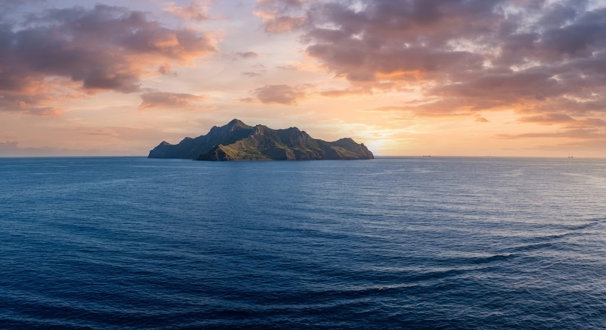

Una isla unica en el mundo

Ubicada en el sur del océano Atlántico, la isla de Milan-ga destaca
de sus hermanas debido a sus costas pobladas por pingüinos, su historia
y su amplia gastronomía.
Y todo con un eje principal: El amor por las milanesas.